Soit \(f: I \to \mathbb{R}\) avec \(I\) intervalle de \(\mathbb{R}\).
\(f\) est continue sur \(I\) si
\[\forall x_0 \in I, \forall \varepsilon > 0, \exists \eta_{\varepsilon,x_0} > 0 / \forall x \in I, |x-x_0| \leq \eta_{\varepsilon,x_0} \Longrightarrow |f(x)-f(x_0)| \leq \varepsilon.\]
En général, \(\eta_{\varepsilon,x_0}\) dépend de \(x_0\).
Soit \(f: I \to \mathbb{R}\) avec \(I\) intervalle de \(\mathbb{R}\).
\(f\) est uniformément continue sur \(I\) si
\[\forall \varepsilon > 0, \exists \eta_{\varepsilon} > 0 / \forall x_0 \in I, \forall x \in I, |x-x_0| \leq \eta_{\varepsilon,x_0} \Longrightarrow |f(x)-f(x_0)| \leq \varepsilon.\]
Autrement dit, \(\eta_\varepsilon\) ne dépend plus que de \(\varepsilon\) et est uniforme sur \(I\).
Soit \(f : I \to \mathbb{R}\) lipschitzienne sur \(I\) alors \(f\) est uniformément continue sur \(I\).
En effet, il existe \(C \in \mathbb{R}^{+\star}\) tel que
\[\forall x,x' \in I, \left|f(x)-f(x')\right| \leq C\left|x-x'\right|.\]
On a donc pour tout \(\varepsilon > 0\), avec \(\eta = \frac{\varepsilon}{C}\),
\[|x-x'| \leq \eta \Longrightarrow \left|f(x)-f(x')\right| \leq C\eta = \varepsilon.\]
\(\begin{array}{lllll} f & : & \mathbb{R}^{+} & \to & \mathbb{R} \\ & & x & \mapsto & x^2 \end{array}\) n’est pas uniformément continue sur \(\mathbb{R}^{+}\) bien que \(f\) soit continue sur \(\mathbb{R}^{+}\).
On comprend sur le graphe ci-contre que pour un \(\varepsilon > 0\) fixé, le \(\eta_{x,\varepsilon}\) diminue quand \(x\) augmente.
On présume même \[\eta_{x,\varepsilon} \xrightarrow[x \to +\infty]{} 0,\]
ce que l’on montrera dans la preuve.
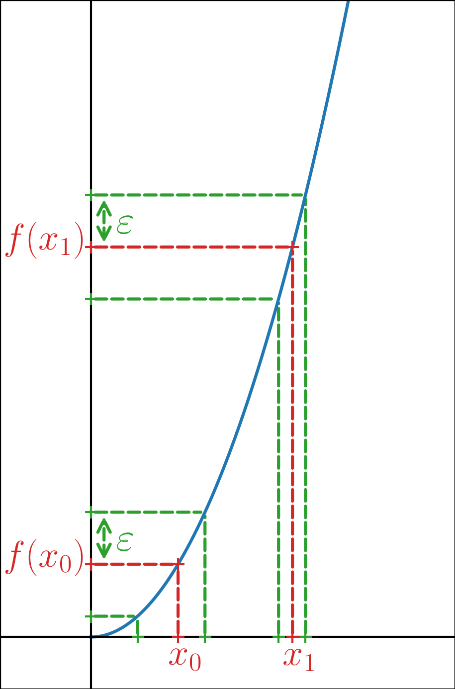
Par l’absurde, si \(f\) était uniformément continue sur \(\mathbb{R}^+\), on aurait : soit \(\varepsilon > 0\), il existe \(\eta_\varepsilon\) tel que \[\forall x,x' \in \mathbb{R}^{+}, |x-x'| \leq \eta_\varepsilon \Longrightarrow |f(x)-f(x')| \leq \varepsilon.\]
Or, pour \(x \in \mathbb{R}^{+}\) et \(x' = x+\eta_\varepsilon\), on a \(|x-x'| = \eta_\varepsilon \leq \eta_\varepsilon\)
\(|f(x)-f(x')| = \left|x^2-\left(x'\right)^2\right| = \left|x-x'\right|\left|x+x'\right| = \eta_\varepsilon \left|x+x'\right| = \left(2x+\eta_\varepsilon\right)\eta_\varepsilon \leq \varepsilon\).
On a donc \(\eta_\varepsilon \leq \frac{\varepsilon}{2x+\eta_\varepsilon} \xrightarrow[x \to +\infty]{} 0\), ce qui est absurde.
(Théorème de Heine) Soit \(f : [a,b] \mapsto \mathbb{R}\) continue sur \([a,b]\) (\(a,b \in \mathbb{R}\) et \(a \leq b\)).
Alors, \(f\) est uniformément continue sur \([a,b]\)
Par l’absurde, supposons que \(f\) n’est pas uniformément continue sur \([a,b]\).
Alors, il existe \(\varepsilon_0 > 0\) tel que pour tout \(\eta >0\), il existe \(x_\eta, x'_\eta \in [a,b]\) tels que \(\left|x_\eta-x'_\eta\right| \leq \eta\) mais \(\left|f\left(x_\eta\right)-f\left(x'_\eta\right)\right| > \varepsilon_0\).
En considérant \(\eta = \frac{1}{n+1}\) pour chaque \(n \in \mathbb{N}\), on construit donc deux suites \((x_n)_{n\geq 0}\) et \((x'_n)_{n\geq 0}\) de \([a,b]\) telles que pour tout \(n \in \mathbb{N}\), \(\left|x_n-x'_n\right| \leq \frac{1}{n+1}\) et \(\left|f\left(x_n\right)-f\left(x'_n\right)\right| > \varepsilon_0\).
On a donc \((x_n)_{n \geq 0}\) qui est une suite bornée et par théorème de Bolzano-Weierstrass, il existe une extraction \(\varphi : \mathbb{N}\to \mathbb{N}\) telle que \(\left(x_{\varphi(n)}\right)\) converge vers une limite \(\ell \in [a,b]\).
De "pour tout \(n \in \mathbb{N}, \left|x_{\varphi(n)}-x'_{\varphi(n)}\right| \leq \frac{1}{{\varphi(n)}+1}\)", on tire alors aussi \(x'_{\varphi(n)} \xrightarrow[n \to +\infty]{} \ell\).
On en déduit alors, comme \(f\) est continue sur \([a,b]\), \(\left|f\left(x_{\varphi(n)}\right)-f\left(x'_{\varphi(n)}\right)\right| \xrightarrow[n \to +\infty]{} \left|f(\ell)-f(\ell)\right| = 0\), ce qui est contradictoire avec \(\left|f\left(x_{\varphi(n)}\right)-f\left(x'_{\varphi(n)}\right)\right| > \varepsilon_0\).
On a donc bien \(f\) uniformément continue sur \([a,b]\).
Bien que \(\begin{array}{lllll} f & : & \mathbb{R}^{+} & \to & \mathbb{R} \\ & & x & \mapsto & x^2 \end{array}\) ne soit pas uniformément continue sur \(\mathbb{R}^{+}\), en appliquant le théorème de Heine, on a pour tout \(A \geq 0\), \(\begin{array}{lllll} \tilde{f} & : & [0,A] & \to & \mathbb{R} \\ & & x & \mapsto & x^2 \end{array}\) qui est uniformément continue sur \([0,A]\).
Soient \(a,b \in \mathbb{R}\) tels que \(a < b\).
Une subdivision \(\sigma\) de \([a,b]\) est une suite finie strictement croissante \((a_0,\ldots,a_p)\) de points de \([a,b]\) telle que \(a_0 = a\) et \(a_p = a\).
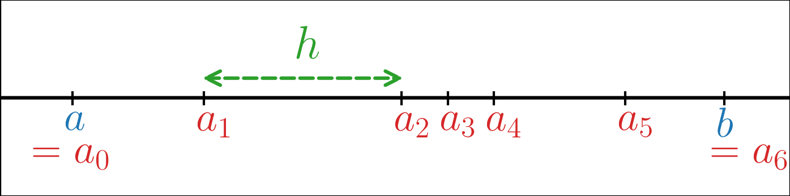
Le pas de \(\sigma\) désigne alors \(\max_{k \in [\![ 0, p-1]\!] } a_{k+1-a_k}\), noté \(p(\sigma)\).
La subdivision régulière \(\sigma = (a_0,\ldots,a_p)\) est telle qu’il existe \(h > 0\) tel que \(h = a_{k+1}-a_k\) pour tout \(k \in [\![ 0,p-1]\!]\).
Dans ce cas, on a pour tout \(k \in [\![ 0,p-1]\!]\), \(a_{k+1} = a_k+h\) donc \(a_k = a_0+kh = a+kh\).
Ce qui donne aussi \(a_p = b = a+ph \iff h = \frac{b-a}{p}\).
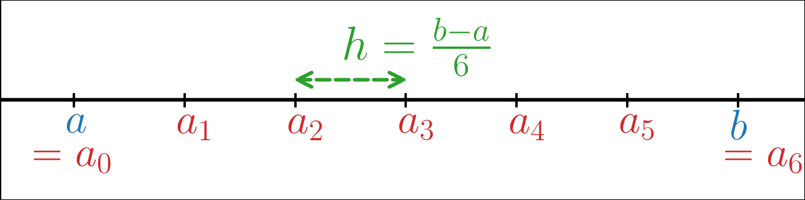
Soit \(\varphi : [a,b] \to \mathbb{R}\).
\(\varphi\) est en escalier sur \([a,b]\) s’il existe \(\sigma = (a_0,\ldots,a_p)\) une subdivision de \([a,b]\) telle que pour tout \(0 \leq k \leq p-1\), \(\varphi_{| ]a_k, a_{k+1}[}\) est constante sur \(]a_k,a_{k+1}[\).
Dans ce cas \(\sigma\) est dite adaptée à \(\varphi\) et pour \(0 \leq k \leq p-1\), on note \(\varphi_k\) la valeur constante de \(\varphi\) sur \(]a_k,a_{k+1}[\).
On note \(\mathscr{E}([a,b],\mathbb{R})\) ou \(\mathscr{E}([a,b])\) l’ensemble des fonctions en escalier sur \([a,b]\).
Par exemple, le graphe ci-dessous représente une fonction en escalier.
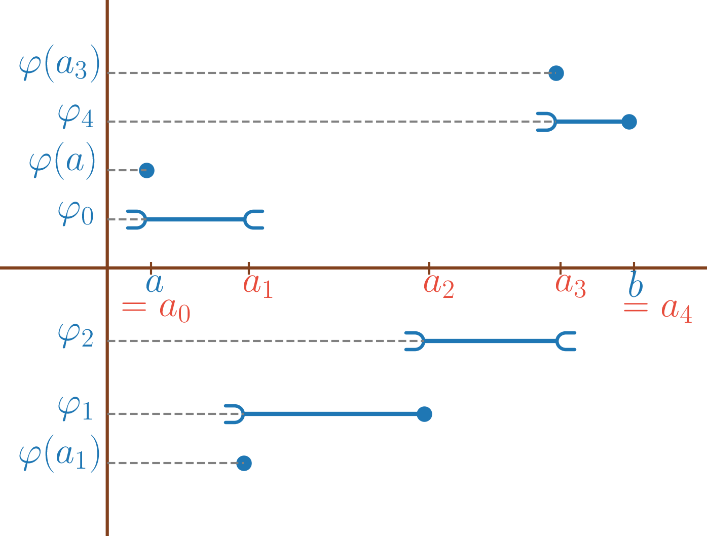
Soit \(\varphi \in \mathscr{E}([a,b])\) et \(\sigma = (a_0,\ldots,a_p)\) subdivision adapté à \(\varphi\).
Soit \(i \in [\![ 0,p-1 ]\!]\) et \(c \in ]a_i,a_{i+1}[\) alors \(\tau = (a_0,\ldots,a_i,c,a_{i+1},\ldots,a_p)\) est adaptée à \(\varphi\).
\(\varphi\) est constante sur \(]a_i,a_{i+1}[\) donc a fortiori, elle est constante sur \(]a_i,c[\) et \(]c,a_{i+1}[\).
\(\mathscr{E}([a,b])\) est un \(\mathbb{R}\)-espace vectoriel.
Montrons que c’est un sous-espace vectoriel de \(\mathscr{F}([a,b],\mathbb{R})\).
\(0_{\mathscr{F}([a,b],\mathbb{R})} \in \mathscr{E}([a,b])\) et la subdivision \((a,b)\) est adaptée.
Soient \(\varphi, \psi \in \mathscr{E}([a,b])\) et \(\lambda \in \mathbb{R}\) et \(\sigma, \tau\) des subdivisions adaptées à \(\varphi\) et \(\psi\).
On note \(\sigma \cup \tau\) la subdivision obtenue en réunissant les points de \(\sigma\) et \(\tau\) et en les rangeant dans un ordre strictement croissant.
Alors, \(\sigma \cup \tau\) est la subdivision \(\sigma\) à laquelle on a ajouté un nombre fini de points donc en appliquant la proposition [prop:subdivision_aggrandie_toujours_adaptee] un nombre fini de fois, \(\sigma \cup \tau = (a_0,\ldots,a_p)\) est adaptée à \(\varphi\).
De même, \(\sigma \cup \tau\) est adaptée à \(\psi\).
On a donc pour tout \(k \in [\![ 0,p-1 ]\!]\), \(\varphi_{| ] a_k,a_{k+1}[}\) et \(\psi_{| ] a_k,a_{k+1}[}\) constantes.
Donc \(\lambda\psi_{| ] a_k,a_{k+1}[}\) constante et \(\left(\varphi+\lambda\psi\right)_{| ] a_k,a_{k+1}[}\) aussi.
On a donc \(\varphi+\lambda\psi \in \mathscr{E}([a,b])\).
Soit \(\varphi \in \mathscr{E}([a,b])\) et \(\sigma = (a_0,\ldots,a_p)\) subdivision de \([a,b]\) adaptée à \(\varphi\).
Soit \(k \in [\![ 0, p-1]\!]\), on considère \(\varphi_k(a_{k+1}-a_k)\) qui est l’aire algébrique d’un rectangle. Elle est algébrique au sens où si \(\varphi_k < 0\), cette aire est négative. Autrement dit, l’aire d’un rectangle "au-dessus de l’axe des abscisses" est comptée positivement et l’aire d’un rectangle "en dessous de l’axe des abscisses" est comptée négativement.
Sur l’exemple ci-contre, les aires vertes sont comptées positivement tandis que les aires rouges sont comptées négativement.
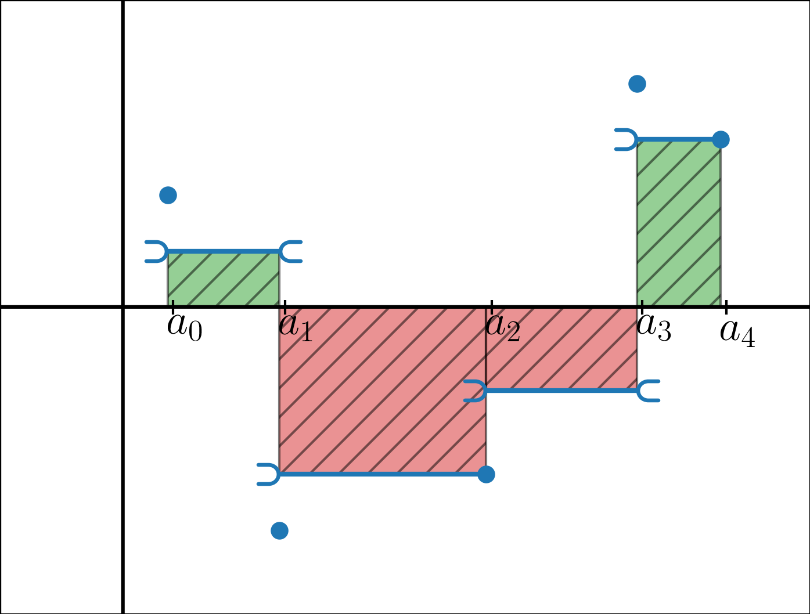
On considère alors \(S(\varphi,\sigma) = \sum_{k=0}^{p-1} \varphi_k(a_{k+1}-a_k)\). On voudrait définir \(S(\varphi,\sigma)\) comme l’intégrale entre \(a\) et \(b\) de \(\varphi\), que l’on noterait \(\int_a^b \varphi(t)dt\) mais cette aire algébrique semble a priori dépendre de la subdivision \(\sigma\) (et pas seulement de \(\sigma\)). Montrons que ce n’est pas le cas pur pouvoir définir formellement \(\int_a^b \varphi(t)dt\).
Soit \(\varphi \in \mathscr{E}([a,b])\) et \(\sigma\) et \(\tau\) subdivisions de \([a,b]\) adaptée à \(\varphi\).
Alors \(S(\varphi,\sigma) = S(\varphi,\tau)\).
On commence par traiter le cas où \(\sigma = (a_0,\ldots,a_p)\) et \(\tau = (a_0,\ldots,a_k,c,a_{k+1},a_p)\) avec \(k \in [\![ 0, p-1]\!]\) et \(c \in ]a_k,a_{k+1}[\).
On a
\[\begin{aligned} S(\varphi,\sigma) & = \sum_{i=0}^{p-1}(a_{i+1}-a_i) \varphi_{| ]a_i,a_{i+1}[} \\ & = \sum_{i=0}^{k-1}(a_{i+1}-a_i) \varphi_{| ]a_i,a_{i+1}[} + (a_{k+1}-a_k) \varphi_{| ]a_k,a_{k+1}[} + \sum_{i=k+1}^{p-1}(a_{i+1}-a_i) \varphi_{| ]a_i,a_{i+1}[}. \end{aligned}\]
Or, \(\varphi_{|]a_k,a_{k+1}[} = \varphi_{|]a_k,c[} = \varphi_{|c,a_{k+1}[}\) donc
\[\begin{aligned} (a_{k+1}-a_k) \varphi_{| ]a_k,a_{k+1}[} & = (a_{k+1}-c+c-a_k) \varphi_{| ]a_k,a_{k+1}[} \\ & = (a_{k+1}-c)\varphi_{| ]a_k,a_{k+1}[}+(c-a_k) \varphi_{| ]a_k,a_{k+1}[} \\ & = (a_{k+1}-c)\varphi_{| ]c,a_{k+1}[}+(c-a_k) \varphi_{| ]a_k,c[}, \end{aligned}\] ce qui revient à considérer le dessin ci-dessous.
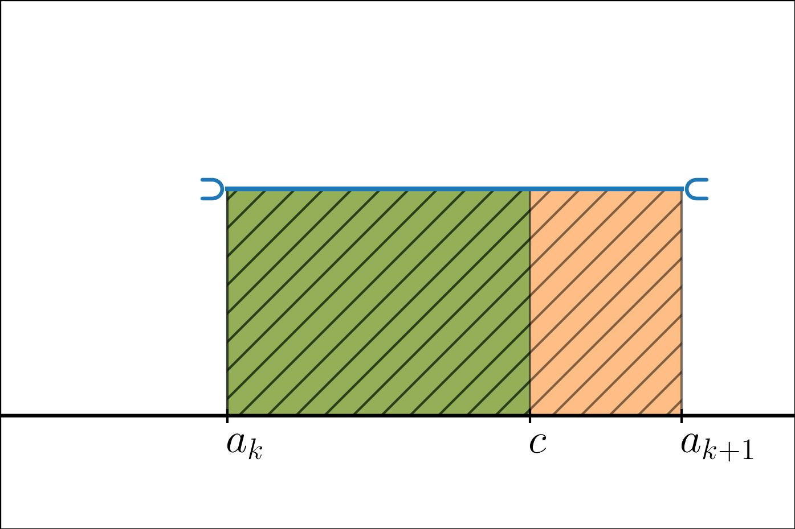
On a donc
\[\begin{aligned} S(\varphi,\sigma) & = \sum_{i=0}^{k-1}(a_{i+1}-a_i) \varphi_{| ]a_i,a_{i+1}[} + (a_{k+1}-c)\varphi_{| ]c,a_{k+1}[}+(c-a_k) \varphi_{| ]a_k,c[} + \sum_{i=k+1}^{p-1}(a_{i+1}-a_i) \varphi_{| ]a_i,a_{i+1}[} \\ & = S(\varphi,\tau). \end{aligned}\]
Dans le cas général, on considère \(\sigma \cup \tau\) la subdivision obtenue en réunissant les points de \(\sigma\) et \(\tau\) et en les rangeant dans un ordre strictement croissant.
Et alors, \(\sigma \cup \tau\) est la subdivision \(\sigma\) à laquelle on a ajouté un nombre fini de points.
En itérant le premier cas, on a donc \(S(\varphi,\sigma) = S(\varphi, \sigma \cup \tau)\).
De même, \(S(\varphi,\tau) = S(\varphi, \sigma \cup \tau)\).
Donc \(S(\varphi,\sigma) = S(\varphi,\tau)\).
Soit \(\varphi \in \mathscr{E}([a,b])\) et \(\sigma = (a_0,\ldots,a_p)\) subdivision de \([a,b]\) adaptée à \(\varphi\).
On définit l’intégrale de \(\varphi\) entre \(a\) et \(b\), notée \(\int_a^b \varphi(t)dt\) ou \(\int_a^b \varphi\), comme
\[\int_a^b \varphi(t)dt = \sum_{k=0}^{p-1} \varphi_k(a_{k+1}-a_k).\]
Comme démontré avant, cette définition est bien posée car elle ne dépend pas de la subdivision \(\sigma\) (du temps qu’elle est adaptée à \(\varphi\)).
Si \(\sigma = (a_0,\ldots,a_p)\) est adaptée à \(\varphi \in \mathscr{E}([a,b])\) alors \(\int_a^b \varphi\) ne dépend pas de \(\varphi(a_k)\) pour \(0 \leq k \leq p\).
Si \(\varphi\) est constante égale à \(\alpha \in \mathbb{R}\) alors \(\sigma = (a,b)\) est adaptée à \(\varphi\) et \(\int_a^b \varphi = \alpha(b-a)\).
L’application \(\begin{array}{lllll} L & : & \mathscr{E}([a,b]) & \to & \mathbb{R} \\ & & \varphi & \mapsto & \int_a^b \varphi \end{array}\) est une forme linéaire sur \(\mathscr{E}([a,b])\).
Soient \(\varphi, \psi \in \mathscr{E}\left([a,b]\right)\) et \(\lambda \in \mathbb{R}\).
Comme celle construite dans la preuve de la proposition [prop:escalier_est_espace_vectoriel], on considère \(\sigma\) une subdivision de \([a,b]\) adaptée à \(\varphi\) et à \(\psi\).
Alors, en écrivant \(\sigma = (a_0,\ldots,a_p)\), on a
\[\begin{aligned} \int_a^b (\varphi + \lambda \psi) & = \sum_{k=0}^{p-1} (a_{k+1}-a_k)(\varphi_k + \lambda \psi_k) \\ & = \sum_{k=0}^{p-1} (a_{k+1}-a_k)\varphi_k + \lambda \sum_{k=0}^{p-1} (a_{k+1}-a_k)\psi_k) \\ & = \int_a^b \varphi + \int_a^b \lambda \psi. \end{aligned}\]
Soit \(\varphi \in \mathscr{E}([a,b])\) telle que pour tout \(x \in [a,b]\), \(\varphi(x) \geq 0\).
Alors, \(\int_a^b \varphi \geq 0\).
Soit \(\sigma = (a_0,\ldots,a_p)\) subdivision de \([a,b]\) adaptée à \(\varphi\).
Alors,
\[\int_a^b \varphi = \sum_{k=0}^{p-1} \underbrace{(a_{k+1}-a_k)}_{\geq 0}\underbrace{\varphi_k}_{\geq 0} \geq 0.\]
Soient \(\varphi,\psi \in \mathscr{E}([a,b])\) telles que pour tout \(x \in [a,b]\), \(\varphi(x) \leq \psi(x)\).
Alors, \(\int_a^b \varphi \leq \int_a^b \psi.\)
On applique la proposition précédente à \(\gamma = \psi - \varphi\) qui est positive.
On a alors \(0 \leq \int_a^b \psi - \varphi = \int_a^b \psi - \int_a^b \varphi\) par linéarité de l’intégrale donc \(\int_a^b \varphi \leq \int_a^b \psi.\)
Soient \(\varphi \in \mathscr{E}([a,b])\) et \(c \in ]a,b[\).
Alors, \(\varphi_{|[a,c]} \in \mathscr{E}([a,c])\) et \(\varphi_{|[c,b]} \in \mathscr{E}([c,b])\).
De plus, \(\int_a^b \varphi = \int_a^c \varphi_{|[a,c]} + \int_c^b \varphi_{|[c,b]}\), ce que l’on écrit plus simplement
\[\int_a^b \varphi = \int_a^c \varphi + \int_c^b \varphi.\]
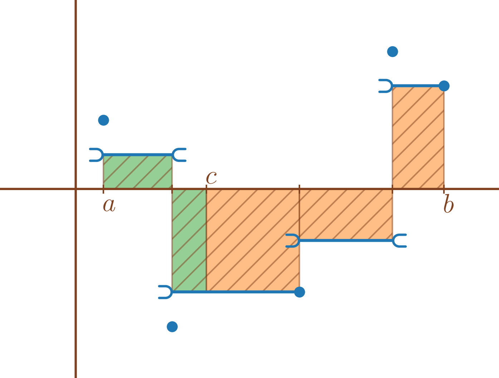
Soit \(\sigma\) subdivision adaptée à \(\varphi\) telle que \(\sigma = (a_0,\ldots,a_i,\underbrace{c}_{= a_{i+1}},a_{i+2},a_p)\) (on peut construire \(\sigma\) en considérant une subdivision adaptée puis en y ajoutant \(c\)).
Alors,
\[\begin{aligned} \int_a^b \varphi & = \sum_{k=0}^{p-1} (a_{k+1}-a_k)\varphi_k \\ & = \sum_{k=0}^{i} (a_{k+1}-a_k)\varphi_k+\sum_{k=i+1}^{p-1} (a_{k+1}-a_k)\varphi_k \\ & = \int_a^c \varphi + \int_c^b \varphi. \end{aligned}\]
Soit \(\varphi \in \mathscr{E}([a,b])\) et \(c \in [a,b]\).
On considère \(\begin{array}{lllll} \psi & : & [a,b] & \to & \mathbb{R} \\ & & x & \mapsto & \left\{\begin{array}{ll} \psi(c) \neq \varphi(c) & \mbox{ si $x=c$,} \\ \varphi(x) & \mbox{ sinon.} \end{array}\right. \end{array}\).
Alors, \(\int_a^b \varphi = \int_a^b \psi\).
Soit \(\sigma\) subdivision adaptée à \(\varphi\) telle que \(\sigma = (a_0,\ldots,a_i,\underbrace{c}_{= a_{i+1}},a_{i+2},a_p)\) (on peut construire \(\sigma\) en considérant une subdivision adaptée puis en y ajoutant \(c\)).
Alors, pour tout \(0 \leq k \leq p-1\), \(\varphi_k\) ne dépend pas de \(\varphi(c)\) et donc
\[\begin{aligned} \int_a^b \varphi = \sum_{k=0}^{p-1} (a_{k+1}-a_k)\varphi_k = \sum_{k=0}^{p-1} (a_{k+1}-a_k)\psi_k = \int_a^b \psi. \end{aligned}\]
Soit \(f : [a,b] \to \mathbb{R}\) (\(a < b\)).
\(f\) est continue par morceaux s’il existe \(\sigma = (a_0,\ldots,a_p)\) une subdivision de \([a,b]\) telle que
pour tout \(0 \leq k \leq p-1\), \(f_{| ]a_k, a_{k+1}[}\) est continue.
pour tout \(0 \leq k \leq p-1\), \(f_{| ]a_k, a_{k+1}[}\), il existe \(\ell_{k,d} \in \mathbb{R}\) et \(\ell_{k+1,g} \in \mathbb{R}\) telles que
\[f(x) \xrightarrow[x \to a_k^+]{} \ell_{k,d} \text{ et }f(x) \xrightarrow[x \to a_{k+1}^-]{} \ell_{k+1,g}.\]
(en général \(\ell_{k,d} \neq f(a_k)\) et \(\ell_{k+1,g} \neq f(a_{k+1})\)).
Dans ce cas \(\sigma\) est dite adaptée à \(\varphi\).
On note \(\mathscr{C}_{\mathrm{m}}\left([a,b],\mathbb{R}\right)\) ou \(\mathscr{C}_{\mathrm{m}}\left([a,b]\right)\) l’ensemble des fonctions continues par morceaux sur \([a,b]\).
Par exemple, la fonction possédant le graphe ci-dessous est continue par morceaux.
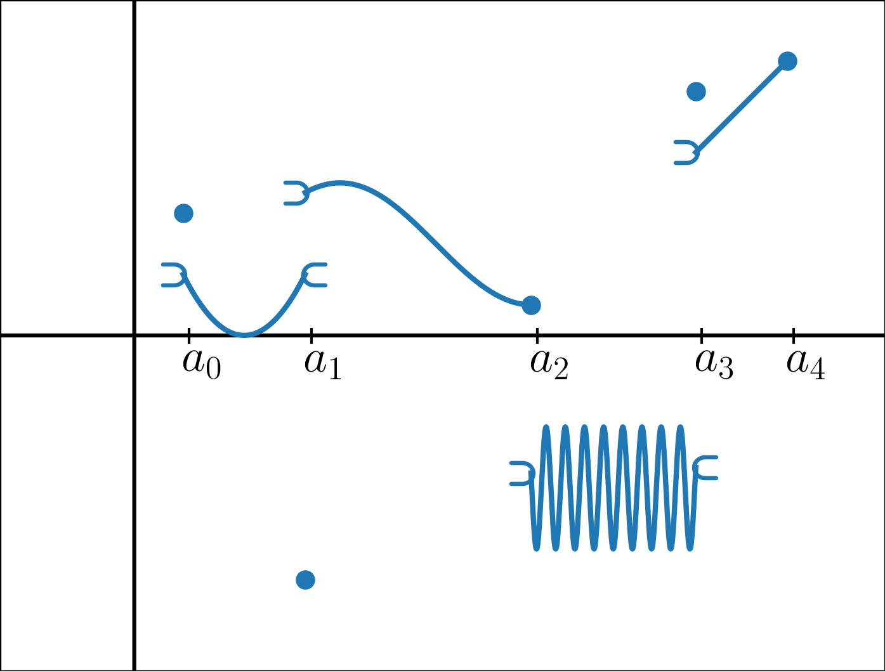
En revanche, ce n’est pas le cas de la fonction ci-dessous, comme elle n’admet pas de limite finie à gauche de \(a_1\).
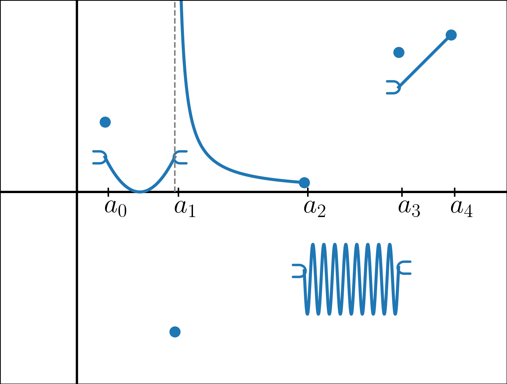
On a \(\mathscr{E}([a,b]) \subset \mathscr{C}_{\mathrm{m}}\left([a,b]\right)\) et \(\mathscr{C}\left([a,b],\mathbb{R}\right) \subset \mathscr{C}_{\mathrm{m}}\left([a,b]\right)\).
\(\mathscr{C}_{\mathrm{m}}\left([a,b]\right)\) est un \(\mathbb{R}\)-espace vectoriel.
Montrons que \(\mathscr{C}_{\mathrm{m}}\left([a,b]\right)\) est un sous-espace vectoriel de \(\mathscr{F}\left([a,b],\mathbb{R}\right)\).
On a clairement \(0_{\mathscr{F}\left([a,b],\mathbb{R}\right)} \in \mathscr{C}_{\mathrm{m}}\left([a,b]\right)\).
Soient \(f,g \in \mathscr{C}_{\mathrm{m}}\left([a,b]\right)\) et \(\lambda \in \mathbb{R}\).
Soient \(\sigma\) subdivision adaptée à \(f\) et \(\tau\) subdivision adaptée à \(g\). De même que pour les fonctions en escalier, on peut considérer \(\sigma \cup \tau\), obtenue en réunissant \(\sigma\) et \(\tau\) dans le bon ordre, et elle est alors adaptée à \(f\) et \(g\).
En notant \(\sigma \cup \tau = (a_0,\ldots,a_p)\), on a
pour tout \(0 \leq k \leq p-1\), \(\left(f+\lambda g\right)_{| ]a_k, a_{k+1}[}\) est continue.
pour tout \(0 \leq k \leq p-1\),
\[\left(f+\lambda g\right)(x) \xrightarrow[x \to a_k^+]{} \ell_{k,d}^f + \lambda\ell_{k,d}^g \text{ et }\left(f+\lambda g\right)(x) \xrightarrow[x \to a_{k+1}^-]{} \ell^f_{k+1,g}+\lambda\ell^g_{k+1,g}.\]
en notant \(\ell_{k,d}^f,\ell_{k+1,g}^f\) les limites à droite de \(a_k\) et à gauche de \(a_{k+1}\) de \(g\) et \(\ell_{k,d}^g,\ell_{k+1,g}^g\) celles de \(g\).
On a donc \(f+\lambda g \in \mathscr{C}_{\mathrm{m}}\left([a,b]\right)\).
\(\mathscr{C}_{\mathrm{m}}\left([a,b]\right)\) est un anneau.
Montrons que \(\mathscr{C}_{\mathrm{m}}\left([a,b]\right)\) est un sous-anneau de \(\mathscr{F}([a,b],\mathbb{R})\).
Comme \(\mathscr{C}_{\mathrm{m}}\left([a,b]\right)\) est un sous-espace vectoriel de \(\mathscr{F}([a,b],\mathbb{R})\), c’est a fortiori un sous-groupe de \(\mathscr{F}([a,b],\mathbb{R})\).
\(1_{\mathscr{F}([a,b],\mathbb{R})} \in \mathscr{C}_{\mathrm{m}}\left([a,b]\right)\).
Soient \(f,g \in \mathscr{C}_{\mathrm{m}}\left([a,b]\right)\).
Soient \(\sigma\) subdivision adaptée à \(f\) et \(\tau\) subdivision adaptée à \(g\). De même que pour les fonctions en escalier, on peut considérer \(\sigma \cup \tau\), obtenue en réunissant \(\sigma\) et \(\tau\) dans le bon ordre, et elle est alors adaptée à \(f\) et \(g\).
En notant \(\sigma \cup \tau = (a_0,\ldots,a_p)\), on a
pour tout \(0 \leq k \leq p-1\), \(\left(fg\right)_{| ]a_k, a_{k+1}[}\) est continue comme produit de fonctions continues.
pour tout \(0 \leq k \leq p-1\),
\[\left(fg\right)(x) \xrightarrow[x \to a_k^+]{} \ell_{k,d}^f\ell_{k,d}^g \text{ et }\left(f g\right)(x) \xrightarrow[x \to a_{k+1}^-]{} \ell^f_{k+1,g}\ell^g_{k+1,g}.\]
en notant \(\ell_{k,d}^f,\ell_{k+1,g}^f\) les limites à droite de \(a_k\) et à gauche de \(a_{k+1}\) de \(g\) et \(\ell_{k,d}^g,\ell_{k+1,g}^g\) celles de \(g\).
On a donc \(fg \in \mathscr{C}_{\mathrm{m}}\left([a,b]\right)\).
Si \(f \in \mathscr{C}_{\mathrm{m}}\left([a,b]\right)\), \(f\) est bornée sur \([a,b]\).
Soit \(\sigma = (a_0,\ldots,a_p)\) subdivision adaptée à \(f\).
Alors,
pour tout \(0 \leq k \leq p-1\), \(f_{| ]a_k, a_{k+1}[}\) est continue.
pour tout \(0 \leq k \leq p-1\), il existe \(\ell_{k,d} \in \mathbb{R}\) et \(\ell_{k+1,g} \in \mathbb{R}\) telles que
\[f(x) \xrightarrow[x \to a_k^+]{} \ell_{k,d} \text{ et }f(x) \xrightarrow[x \to a_{k+1}^-]{} \ell_{k+1,g}.\]
On a donc \(f_{|]a_k,a_{k+1}[}\) qui est prolongeable en une fonction continue \(\tilde{f}_k\) sur \([a_k,a_{k+1}]\) en posant \(\tilde{f}_k(a_k) = \ell_{k,d}\) et \(\tilde{f}_k(a_{k+1}) = \ell_{k+1,g}\).
Alors, en tant que fonction continue sur un segment, \(\tilde{f}_k\) est bornée. Il existe donc \(M_k \in \mathbb{R}^{+}\) tel que pour tout \(x \in [a_k,a_{k+1}], \left|\tilde{f}_k(x)\right| \leq M_k\).
A fortiori, pour tout \(x \in ]a_k,a_{k+1}[\), \(\left|f(x)\right| =\left|\tilde{f}_k(x)\right| \leq M_k\).
On en déduit alors qu’en notant \(M = \max_{0 \leq k \leq p-1} M_k\),
pour tout \(x \in [a,b] \setminus \left\{a_0,\ldots,a_p\right\}\), \(\left|f(x)\right| \leq M\).
Donc en notant \(M' = \max_{0 \leq k \leq p}\left|f(a_k)\right|\),
pour tout \(x \in [a,b]\), \(|f(x)| \leq \max\left\{M,M'\right\}\).
Soit \(f \in \mathscr{C}_{\mathrm{m}}\left([a,b]\right)\) et \(\varepsilon \in \mathbb{R}^{+\star}\).
Alors, il existe \(\varphi \in \mathscr{E}\left([a,b]\right)\) telle que
\[\forall x \in [a,b], \varphi(x) \leq f(x) \leq \varphi(x)+\varepsilon.\]
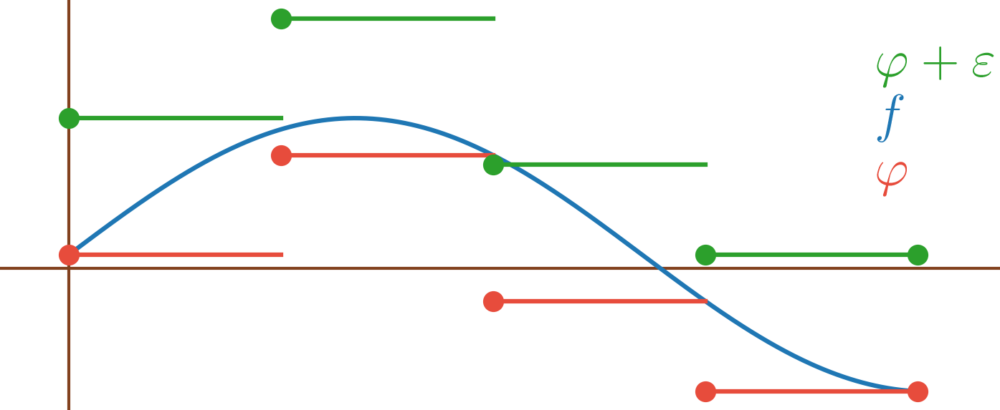
Commençons par traiter le cas \(f\) continue sur \([a,b]\).
Par théorème de Heine, \(f\) est uniformément continue sur \([a,b]\) donc il existe \(\eta_\varepsilon\) tel que \[\forall x,x' \in [a,b], |x-x'| \leq \eta_\varepsilon \Longrightarrow \left|f(x)-f(x')\right| \leq \varepsilon.\]
On considère alors \(\sigma = (a_0,\ldots,a_p)\) la subdivision régulière de \([a,b]\) de pas \(h = \frac{b-a}{p}\) (voir l’exemple [ex:subdivision_reguliere]). On prend \(p\) assez grand tel que \(h < \eta_\varepsilon\) (ce qui est possible car \(\frac{b-a}{p} \xrightarrow[p \to +\infty]{} 0\)).
Pour \(k \in [\![ 0,p-1]\!]\), comme \(f\) est continue sur le segment \([a_k,a_{k+1}] f(x)\), \(f\) atteint \(m_k = \inf_{x \in [a_k,a_{k+1}]}\) ie il existe \(c_k \in [a_k,a_{k+1}]\) tel que \(f(c_k) = m_k\).
On définit alors \(\varphi \in \mathscr{E}\left(ab\right)\) telle que
pour tout \(k \in [\![ 0,p-1]\!]\),
\(\forall x \in [a_k,a_{k+1}[, \varphi(x) = f(c_k) = m_k\)
et \(\varphi(a_p) = f(c_p) = m_p\).
Alors, tout d’abord, pour tout \(x \in [a,b[\),
il existe \(0 \leq k \leq p-1\) tel que \(x \in [a_k,a_{k+1}[\).
On a donc
\(\varphi(x) = m_k = \inf_{x \in [a_k,a_{k+1}]} f(x) \leq f(x)\).
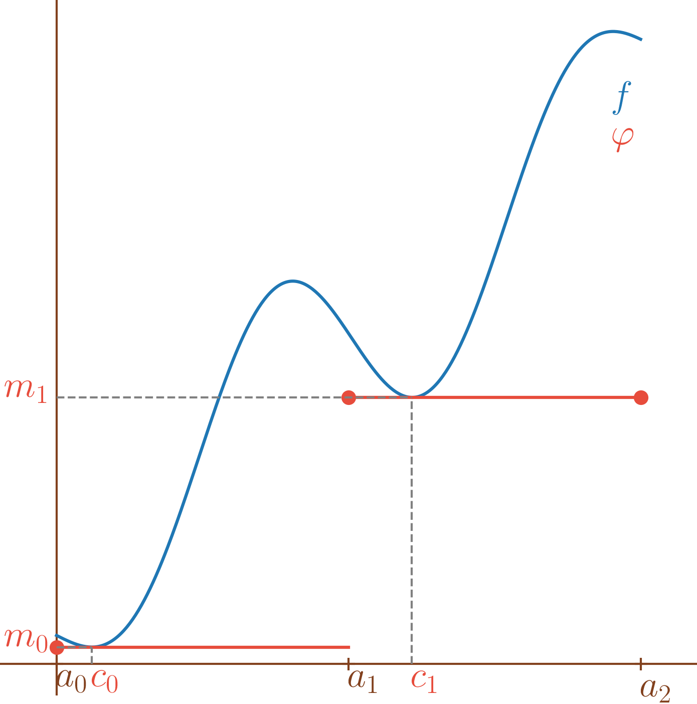
De plus, \(\left|x-c_k\right| \leq a_{k+1-a_k} = h < \eta_\varepsilon\).
Donc, par uniforme continuité de \(f\), \(f(x)-\varphi(x)=\left|f(x)-\varphi(x)\right| = \left|f(x)-f(c_k)\right| \leq \varepsilon\).
On a donc bien \(\varphi(x) \leq f(x) \leq \varphi(x)+\varepsilon\).
Pour \(x = b\), on a \(\varphi(b) = f(c_{p-1}) = \inf_{x \in [a_{p-1},b]} f(x) \leq f(b)\) et de même que précédemment, \(\left|b-c_{p-1}\right| \leq \eta_\varepsilon\) donc \(f(b) \leq \varphi(b) + \varepsilon\).
On a donc bien \[\forall x \in [a,b], \varphi(x) \leq f(x) \leq \varphi(x)+\varepsilon.\]
Revenons au cas général : \(f \in \mathscr{C}_{\mathrm{m}}\left([a,b]\right)\).
Soit \(\sigma = (a_0,\ldots,a_p)\) adaptée à \(f\).
Alors, pour tout \(0 \leq k \leq p-1\), \(f_{| ]a_k, a_{k+1}[}\) est continue et il existe \(\ell_{k,d} \in \mathbb{R}\) et \(\ell_{k+1,g} \in \mathbb{R}\) telles que \(f(x) \xrightarrow[x \to a_k^+]{} \ell_{k,d}\) et \(f(x) \xrightarrow[x \to a_{k+1}^-]{} \ell_{k+1,g}.\)
On a donc \(f_{|]a_k,a_{k+1}[}\) qui est prolongeable en une fonction continue \(\tilde{f}_k\) sur \([a_k,a_{k+1}]\) en posant \(\tilde{f}_k(a_k) = \ell_{k,d}\) et \(\tilde{f}_k(a_{k+1}) = \ell_{k+1,g}\).
Par le cas précédent, il existe \(\varphi_k \in \mathscr{E}\left([a_k,a_{k+1}]\right)\) telle que pour tout \(x \in [a_k,a_{k+1}], \varphi_k(x) \leq \tilde{f}_k(x) \leq \varphi_k(x)+\varepsilon\).
On définit alors \(\varphi\) en escalier telle que pour tout \(x \in ]a_k,a_{k+1}[\), \(\varphi(x) = \varphi_k(x)\) et pour tout \(0 \leq k \leq p, \varphi(a_k) = f(a_k)\).
On a bien \(\varphi\) en escalier (qui reprend les escaliers de chaque \(\varphi_k\)) et de plus,
pour tout \(x \in [a,b] \setminus \left\{a_0,\ldots,a_p\right\}\), \(\varphi(x) = \varphi_k(x) \leq \tilde{f}_k(x) = f(x) \leq \varphi_k(x)+\varepsilon = \varphi(x) +\varepsilon\).
Puis, pour \(k \in [\![ 0,p ]\!]\),
\(\varphi(a_k) = f(a_k) \leq f(a_k)+\varepsilon = \varphi(a_k) + \varepsilon\).
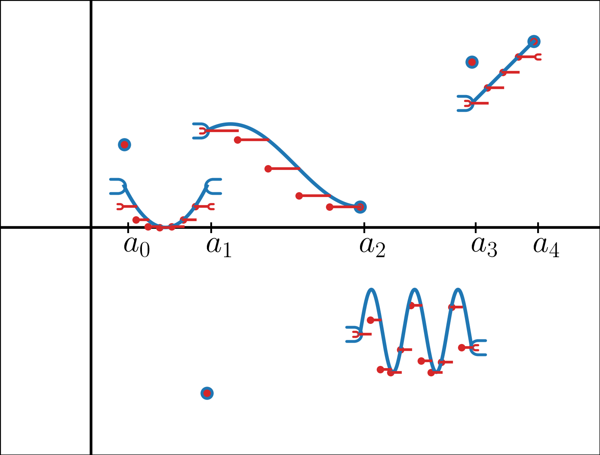
Pour rappel, on a \(\mathscr{E}([a,b]) \subset \mathscr{C}_{\mathrm{m}}\left([a,b]\right)\) et on cherche donc à étendre la définition de l’intégrale dans \(\mathscr{E}([a,b])\) à la notion d’intégrale dans \(\mathscr{C}_{\mathrm{m}}\left([a,b]\right)\), d’où la proposition suivante.
Soit \(f \in \mathscr{C}_{\mathrm{m}}\left([a,b]\right)\) et \(\left(\varepsilon_n\right)\) une suite de réels tels que \(\varepsilon_n \xrightarrow[n \to +\infty]{} 0\).
Pour chaque \(n \in \mathbb{N}\), il existe \(\varphi_n \in \mathscr{E}\left([a,b]\right)\) telle que
\[\forall x \in [a,b], \varphi_n(x) \leq f(x) \leq \varphi_n(x)+\varepsilon_n.\]
On considère alors la suite \(\left(\int_a^b \varphi_n\right)_{n \geq 0}\) converge vers une limite \(I\in \mathbb{R}\) qui ne dépend que de \(f\).
Pour \(n \in \mathbb{N}\), on note \(I_n = \int_a^b \varphi_n\).
D’abord, \(f\) est bornée sur \([a,b]\) donc il existe \(M\in \mathbb{R}^{+}\) tel que pour tout \(x \in [a,b], f(x) \leq M\).
Donc soit \(\varphi \in \mathscr{E}([a,b])\) telle que pour tout \(x \in [a,b]\), \(\varphi(x) \leq f(x)\), on a aussi pour tout \(x \in [a,b], \varphi(x) \leq M\) et par croissance de l’intégrale, \(\int_a^b \varphi \leq M(b-a)\).
Cela donne que \(A = \left\{\int_a^b \varphi / \varphi \in \mathscr{E}\left([a,b]\right) \text{ et }\text{pour tout $x \in [a,b], \varphi(x) \leq f(x)$} \right\}\) est majoré. On note \(I\) sa borne supérieure et on va montrer \(I_n \xrightarrow[n \to +\infty]{} I\).
D’abord, soit \(n \in \mathbb{N}\), pour tout \(x \in [a,b], \varphi_n(x) \leq f(x)\).
Donc \(\int_a^b \varphi_n \in A\) et \(\int_a^b \varphi_n \leq I\).
Soit \(\alpha > 0\), par propriété de la borne supérieure, il existe \(\varphi \in \mathscr{E}\left([a,b]\right)\) telle que pour tout \(x \in [a,b], \varphi(x) \leq f(x)\) et \[I-\alpha < \int_a^b \varphi \leq I.\]
Or, pour tout \(x \in [a,b], \varphi(x) \leq f(x) \leq \varphi_n(x) +\varepsilon\) donc par croissance de l’intégrale,
\[\int_a^b \varphi \leq \int_a^b \left(\varphi_n+\varepsilon_n\right) = I_n+(b-a)\varepsilon_n \text{ par linéarité de l'intégrale.}\]
On en déduit alors \(I_n +(b-a)\varepsilon_n\geq \int_a^b \varphi > I-\alpha\) donc \(I_n > I-\alpha-(b-a)\varepsilon_n\).
OR, \(\varepsilon_n \xrightarrow[n \to +\infty]{} 0\) donc il existe \(N \in \mathbb{N}\) tel que pour tout \(n \geq N\), \(\varepsilon_n \leq \frac{\alpha}{b-a}\).
On a donc pour tout \(n \geq N\),
\(I_n > I-\alpha-(b-a)\varepsilon_n > I-2\alpha\).
On a alors pour tout \(n \geq N\), \(I-2\alpha \leq I_n \leq I \Longrightarrow \left|I_n-I\right| \leq 2\alpha\). On peut trouver un tel \(N\) pour tout \(\alpha > 0\) donc \(I_n \xrightarrow[n \to +\infty]{} I\).
De plus, on a clairement \(I\) qui ne dépend que de \(f\).
Soit \(f \in \mathscr{C}_{\mathrm{m}}\left([a,b]\right)\),
la limite \(I\) de la proposition [prop:lim_def_integrale_CM] est appelée l’intégrale de \(f\) sur \([a,b]\), notée \(\int_a^b f(x)dx\) ou \(\int_a^b f\).
On peut la définir aussi comme
\[I = \sup \left\{\int_a^b \varphi / \varphi \in \mathscr{E}\left([a,b]\right) \text{ et }\text{pour tout $x \in [a,b], \varphi(x) \leq f(x)$} \right\}.\]
\(\varphi \in \mathscr{E}\left([a,b]\right)\) peut être considérée comme un élément de \(\mathscr{E}\left([a,b]\right)\) ou \(\mathscr{C}_{\mathrm{m}}\left([a,b]\right)\) et possède donc a priori deux définitions de son intégrale.
En fait, ces deux définitions coïncident car en considérant la suite de \(\mathscr{E}\left([a,b]\right)\) constante égale à \(\varphi\), on obtient la convergence vers \(\int_a^b \varphi\) au sens des deux intégrales.
Soit \(f \in \mathscr{C}_{\mathrm{m}}\left([a,b]\right)\) avec pour tout \(x \geq 0, f(x) \geq 0\) et \((O,\overrightarrow{i},\overrightarrow{j})\) repère orthonormé de \(\mathscr{P}\).
On note \(\mathscr{A} = \left\{M(x,y) \in \mathscr{P}/ a \leq x \leq b \text{ et }0 \leq y \leq f(x)\right\}\).
Soit \(n \in \mathbb{N}\) et \(\varphi_n \in \mathscr{E}\left([a,b]\right)\) telle que pour tout \(x \in [a,b], \varphi_n(x) \leq f(x) \leq \varphi_n(x) + \frac{1}{n+1}\).
En construisant \(\varphi_n\) comme dans la preuve du théorème [thm:approximation], on peut suppose que \(\varphi_n\) est positive.
On note alors \(\mathscr{A}_n^- = \left\{M(x,y) \in \mathscr{P}/ a \leq x \leq b \text{ et }0 \leq y \leq \varphi_n(x)\right\}\)
et \(\mathscr{A}_n^+ = \left\{M(x,y) \in \mathscr{P}/ a \leq x \leq b \text{ et }0 \leq y \leq \varphi_n(x)+\frac{1}{n+1}\right\}\).
On a alors pour tout \(n \geq 0, \mathscr{A}_n^{-} \subset \mathscr{A} \subset \mathscr{A}_n^+\) donc \(\mathrm{Aire}\left(\mathscr{A}_n^{-}\right) \leq \mathrm{Aire}\left(\mathscr{A}\right)\leq \mathrm{Aire}\left(\mathscr{A}_n^{+}\right).\)
De plus, \(\mathrm{Aire}\left(\mathscr{A}_n^{-}\right) = \int_a^b \varphi_n\) et \(\mathrm{Aire}\left(\mathscr{A}_n^{+}\right) = \int_a^b\left(\varphi_n+\varepsilon_n\right)\)
et \(\int_a^b \varphi_n \xrightarrow[n \to +\infty]{} \int_a^b f\) et \(\int_a^b\left(\varphi_n+\varepsilon_n\right) = \int_a^b \varphi_n +\frac{b-a}{n+1}\xrightarrow[n \to +\infty]{} \int_a^b f\).
Le phénomène est illustré ci-dessous.
| \(\varepsilon_0\) | \(>\) | \(\varepsilon_1\) | \(>\) | \(\varepsilon_2\) |
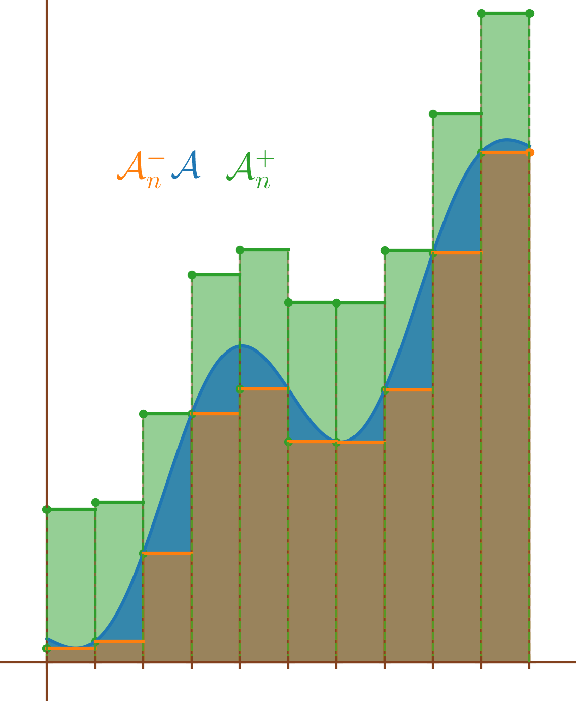 |
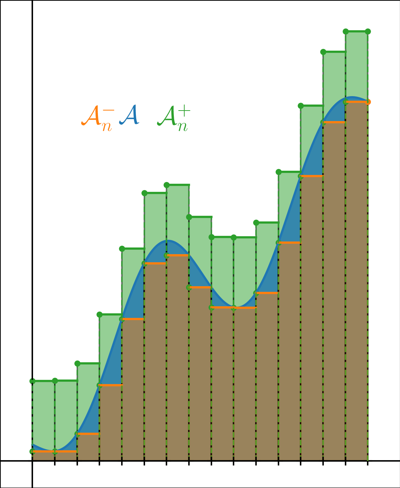 |
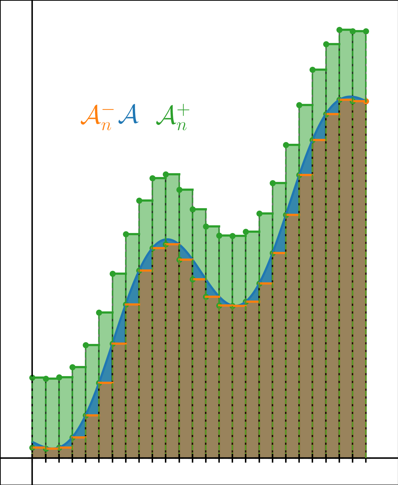 |
On a donc l’aire de \(\mathrm{Aire}\left(\mathscr{A}\right)=\int_a^b f\) et on peut interpréter \(\int_a^b f\) comme l’aire entre la courbe de \(f\) et l’axe des abscisses ou encore "l’aire sous la courbe de \(f\)".
De même, pour \(f\) de signe quelconque, \(\int_a^b f\) est l’aire algébrique entre la courbe de \(f\) et l’axe des abscisses au sens où les parties où \(f\) sont négative sont comptées négativement et celles où \(f\) est négative sont comptées positivement.
On illustre ci-contre sur un exemple en vert les aires comptées positivement et en rouge les aires comptées négativement.
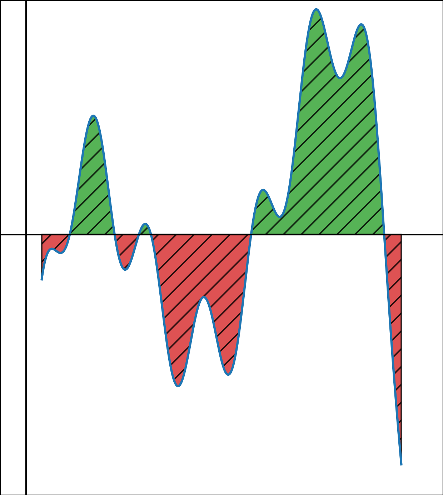
L’application \(\begin{array}{lllll} L & : & \mathscr{C}_{\mathrm{m}}\left([a,b]\right)) & \to & \mathbb{R} \\ & & f & \mapsto & \int_a^b f \end{array}\) est une forme linéaire sur \(\mathscr{C}_{\mathrm{m}}\left([a,b]\right)\).
Soient \(f,g \in \mathscr{C}_{\mathrm{m}}\left([a,b]\right)\) et \(\lambda \in \mathbb{R}\).
Soit \(n \in \mathbb{N}\), \(\varphi_n \in \mathscr{E}\left([a,b]\right)\) telle que pour tout \(x \in [a,b], \varphi_n(x) \leq f(x) \leq \varphi_n(x) + \frac{1}{n+1}\) et \(\psi_n \in \mathscr{E}\left([a,b]\right)\) telle que pour tout \(x \in [a,b], \psi_n(x) \leq g(x) \leq \psi_n(x) + \frac{1}{n+1}\)
Alors, pour \(n \in \mathbb{N}\), \(\varphi_n + \lambda \psi_n \in \mathscr{E}\left([a,b]\right)\) et pour tout \(x \in [a,b]\), \[\varphi_n(x) + \lambda \psi_n(x) \leq f(x)+\lambda g(x) \leq \varphi_n(x) + \lambda \psi_n(x)+\frac{1+\lambda}{n+1}.\]
On a par la proposition [prop:lim_def_integrale_CM], \(\int_a^b \left(\varphi_n + \lambda \psi_n \right) \xrightarrow[n \to +\infty]{} \int_a^b \left(f+\lambda g\right)\) et donc \(\int_a^b \left(\varphi_n + \lambda \psi_n +\frac{1+\lambda}{n+1}\right) = \int_a^b \left(\varphi_n + \lambda \psi_n\right) +\frac{(1+\lambda)(b-a)}{n+1}\xrightarrow[n \to +\infty]{} \int_a^b \left(f+\lambda g\right)\).
Or, on a aussi \(\int_a^b \left(\varphi_n + \lambda \psi_n \right) = \int_a^b\varphi_n + \lambda \int_a^b\psi_n \xrightarrow[n \to +\infty]{} \int_a^bf + \lambda \int_a^bg\) et de même, \(\int_a^b \left(\varphi_n + \lambda \psi_n +\frac{1+\lambda}{n+1}\right) \xrightarrow[n \to +\infty]{} \int_a^bf + \lambda \int_a^bg\).
Donc, par unicité de la limite, \(L(f+\lambda g) = \int_a^b \left(f+\lambda g\right) = \int_a^bf + \lambda \int_a^bg = L(f)+\lambda L(g).\)
Soit \(f \in \mathscr{C}_{\mathrm{m}}\left([a,b]\right)\) telle que pour tout \(x \in [a,b]\), \(f(x) \geq 0\).
Alors, \(\int_a^b f \geq 0\).
Pour rappel, on a \[\int_a^b f = \sup \left\{\int_a^b \varphi / \varphi \in \mathscr{E}\left([a,b]\right) \text{ et }\text{pour tout $x \in [a,b], \varphi(x) \leq f(x)$} \right\}.\]
Or, \(0_{\mathscr{F}([a,b],\mathbb{R})} \in \mathscr{E}([a,b])\) et pour tout \(x \in [a,b], 0_{\mathscr{F}([a,b],\mathbb{R})}(x) = 0 \leq f(x)\).
On a donc \(\int_a^b 0 = 0 \in \left\{\int_a^b \varphi / \varphi \in \mathscr{E}\left([a,b]\right) \text{ et }\text{pour tout $x \in [a,b], \varphi(x) \leq f(x)$} \right\}\)
et donc \(I \geq 0\).
Soient \(f,g \in \mathscr{C}_{\mathrm{m}}\left([a,b]\right)\) telles que pour tout \(x \in [a,b]\), \(f(x) \leq g(x)\).
Alors, \(\int_a^b f \leq \int_a^b g.\)
On applique la proposition précédente à \(h=g-f\) qui est positive.
On a alors \(0 \leq \int_a^b \left(g-f\right) = \int_a^b g - \int_a^b f\) par linéarité de l’intégrale donc \(\int_a^b f \leq \int_a^b g.\)
Soit \(f \in \mathscr{C}_{\mathrm{m}}\left([a,b]\right)\) alors \(|f| \in \mathscr{C}_{\mathrm{m}}\left([a,b]\right)\) et \[\left|\int_a^b f\right| \leq \int_a^b |f|.\]
On a \(-|f| \leq f \leq |f|\) donc par le corollaire [cor:croissance_int_Cmab],
\(-\int_a^b|f| \leq \int_a^bf \leq \int_a^b|f| \iff \left|\int_a^b f\right| \leq \int_a^b |f|.\)
Soient \(f,g \in \mathscr{C}_{\mathrm{m}}\left([a,b]\right)\) et \(M \in \mathbb{R}^{+}\) tel que pour tout \(x \in [a,b]\), \(|f(x)| \leq M\).
Alors, \(\left|\int_a^b fg\right| \leq \int_a^b |g|\).
D’abord, \(fg \in \mathscr{C}_{\mathrm{m}}\left([a,b]\right)\) par la proposition [prop:Cmab_est_un_anneau] donc \(\int_a^b fg\) a un sens. \[\begin{aligned} \left|\int_a^b fg\right| \leq \int_a^b \left|fg\right| = \int_a-b \left|f\right|\left|g\right| \leq M\int_a^b |g|. \end{aligned}\]
Soient \(f \in \mathscr{C}_{\mathrm{m}}\left([a,b]\right)\) et \(c \in ]a,b[\).
Alors, \(\int_a^b f = \int_a^c f_{|[a,c]} + \int_c^b f_{|[c,b]}\), ce que l’on écrit plus simplement
\[\int_a^b f = \int_a^c f + \int_c^b f.\]
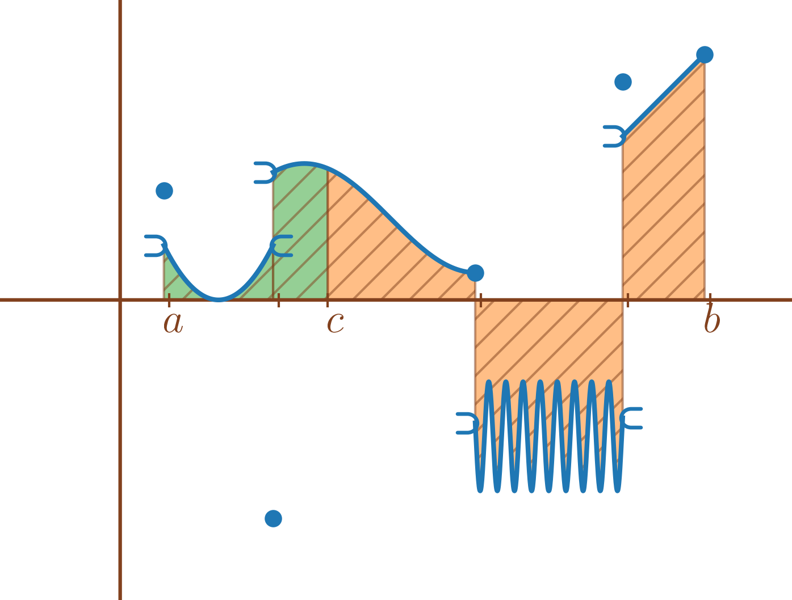
Soit \(f \in \mathscr{C}_{\mathrm{m}}\left([a,b]\right)\).
Soit \(n \in \mathbb{N}\) et \(\varphi_n \in \mathscr{E}\left([a,b]\right)\) telle que pour tout \(x \in [a,b], \varphi_n(x) \leq f(x) \leq \varphi_n(x) + \frac{1}{n+1}\) et donc par la proposition [prop:lim_def_integrale_CM], \(\int_a^b \varphi_n \xrightarrow[n \to +\infty]{} \int_a^b f\).
On note \(\psi_n = \varphi_{n,|[a,c]}\) et \(\theta_n = \varphi_{n,|[c,b]}\).
On a alors pour tout \(x \in [a,c]\), \(\psi_n(x) \leq f_{|[a,c]}(x) \leq \psi_n(x) + \frac{1}{n+1}\) donc par la proposition [prop:lim_def_integrale_CM], \(\int_a^c \psi_n \xrightarrow[n \to +\infty]{} \int_a^c f\).
De même, \(\int_c^b \theta_n \xrightarrow[n \to +\infty]{} \int_c^b f\)
Or, par relation de Chasles dans \(\mathscr{E}([a,b])\), \(\int_a^b \varphi_n = \int_a^c \psi_n + \int_c^b \theta_n\).
Donc en passant à la limite, \(\int_a^b f = \int_a^c f + \int_c^b f\).
Soit \(f \in \mathscr{C}_{\mathrm{m}}\left([a,b]\right)\) et \(c \in [a,b]\).
On considère \(\begin{array}{lllll} g & : & [a,b] & \to & \mathbb{R} \\ & & x & \mapsto & \left\{\begin{array}{ll} g(c) \neq f(c) & \mbox{ si $x=c$,} \\ f(x) & \mbox{ sinon.} \end{array}\right. \end{array}\).
Alors, \(\int_a^b f= \int_a^b g\).
Soit \(n \in \mathbb{N}\) et \(\varphi_n \in \mathscr{E}\left([a,b]\right)\) telle que pour tout \(x \in [a,b], \varphi_n(x) \leq f(x) \leq \varphi_n(x) + \frac{1}{n+1}\) et donc par la proposition [prop:lim_def_integrale_CM], \(\int_a^b \varphi_n \xrightarrow[n \to +\infty]{} \int_a^b f\).
On considère maintenant \(\begin{array}{lllll} \psi_n & : & [a,b] & \to & \mathbb{R} \\ & & x & \mapsto & \left\{\begin{array}{ll} g(c)& \mbox{ si $x=c$,} \\ \varphi_n(x) & \mbox{ sinon.} \end{array}\right. \end{array}\).
On a alors \(\psi_n \in \mathscr{E}([a,b])\) pour tout \(x \in [a,b]\), \(\psi_n(x) \leq g(x) \leq \psi_n(x) + \frac{1}{n+1}\) donc par la proposition [prop:lim_def_integrale_CM], \(\int_a^b \psi_n \xrightarrow[n \to +\infty]{} \int_a^b g\).
Or, par la proposition [prop:integrale_un_seul_point_escalier] connue sur les fonctions en escalier , on a \(\int_a^b \varphi_n = \int_a^b \psi_n\) donc à la limite, \(\int_a^b f= \int_a^b g\).
Soient \(f,g \in \mathscr{C}_{\mathrm{m}}\left([a,b]\right)\) alors
\[\left|\int_a^b fg\right| \leq \sqrt{\left(\int_a^b f^2\right)\left(\int_a^b g^2\right)}.\]
Soit \(t \in \mathbb{R}\), on considère \((f+tg)^2\).
Pour tout \(x \in [a,b]\), \((f+tg)^2(x) \geq 0\) donc \(\int_a^b (f+tg)^2 \geq 0\).
Or, \(\int_a^b (f+tg)^2 = \int_a^b \left(t^2g^2 + 2tfg + f^2\right) = t^2\int_a^b g^2+2t \int_a^b fg + \int_a^b f^2\).
Notons \(\alpha = \int_a^b g^2, \beta = 2\int_a^b fg\) et \(\gamma = \int_a^b f^2\).
On a alors pour tout \(t \in \mathbb{R}\), \(\alpha t^2 + \beta t + \gamma \geq 0\).
Soit \(\alpha = 0\) et donc pour tout \(t \in \mathbb{R}\), \(\beta t + \gamma \geq 0\).
On a alors forcément \(\beta = 0\) car si \(\beta > 0\), \(\beta t + \gamma \xrightarrow[t \to -\infty]{} -\infty\), ce qui est contradictoire et si \(\beta < 0\), \(\beta t + \gamma \xrightarrow[t \to +\infty]{} +\infty\), ce qui est de même contradictoire.
On a donc \(\alpha = \int_a^b g^2 = 0\) et \(\frac{\beta}{2} = \int_a^b fg = 0\) donc on a bien \(\left|\int_a^b fg\right| \leq \sqrt{\left(\int_a^b f^2\right)\left(\int_a^b g^2\right)}\).
Soit \(\alpha \neq 0\) et dans ce cas, on reconnaît un polynôme du second degré en \(t\) qui est toujours positif.
Comme \(\alpha > 0\), ceci est possible mais seulement dans le cas où le polynôme a au plus une racine réelle.
On a donc son discriminant \(\Delta = \beta^2-4\alpha\gamma\) qui vérifie \(\Delta \leq 0\).
Donc \[\begin{aligned} & \beta^2-4\alpha\gamma = 4\left(\int_a^b fg\right)^2-4\left(\int_a^b g^2\right)\left(\int_a^b f^2\right) \leq 0 \\ & \iff \left(\int_a^b fg\right)^2 \leq \left(\int_a^b g^2\right)\left(\int_a^b f^2\right) \\ & \iff \left|\int_a^b fg\right| \leq \sqrt{\left(\int_a^b f^2\right)\left(\int_a^b g^2\right)}. \end{aligned}\]
Soit \(f \in \mathscr{C}\left([a,b],\mathbb{R}\right)\) telle que pour tout \(x \in [a,b], f(x) \geq 0\).
Alors, \[\int_a^b f = 0 \iff \forall x \in [a,b], f(x) = 0.\]
\((\Longleftarrow)\) Si \(f\) est nulle alors \(\forall x \in [a,b], f(x) \leq 0 \text{ et }f(x) \geq 0\)
donc \(\int_a^b f \leq 0 \text{ et }\int_a^b f \geq 0\) donc \(\int_a^b f = 0\).
\((\Longrightarrow)\) Par l’absurde, si \(f\) est non nulle, il existe \(x_0 \in [a,b]\) telle que \(f(x_0) > 0\).
Or, \(f\) est continue donc
si \(x_0 \in ]a,b[\), il existe \(\alpha > 0, \eta > 0\) tels que pour tout \(x \in [x_0-\eta,x_0+\eta], f(x) \geq \alpha\).
On a alors \(\int_a^b f = \int_a^{x_0-\eta}f + \int_{x_0-\eta}^{x_0+\eta}f+\int_{x_0+\eta}^{b}f \geq 0 + \int_{x_0-\eta}^{x_0+\eta}\alpha + 0 \geq 2\eta\alpha > 0\), ce qui est absurde.
si \(x_0 = a\), il existe \(\alpha > 0, \eta > 0\) tels que pour tout \(x \in [a,a+\eta], f(x) \geq \alpha\).
On a alors de même, \(\int_a^b f \geq \int_{a}^{a+\eta}\alpha + 0 \geq \eta\alpha > 0\), ce qui est absurde.
si \(x_0 = b\), il existe \(\alpha > 0, \eta > 0\) tels que pour tout \(x \in [b-\eta,b], f(x) \geq \alpha\).
On a alors de même, \(\int_a^b f \geq 0+ \int_{b-\eta}^{b}\alpha \geq \eta\alpha > 0\), ce qui est absurde.
Ceci est faux pour une fonction \(f \in \mathscr{C}_{\mathrm{m}}\left([a,b]\right)\) non continue.
Par la propriété [prop:integrale_un_seul_point_escalier], la fonction \(\begin{array}{lllll} f & : & [0,1] & \to & \mathbb{R} \\ & & x & \mapsto & \left\{\begin{array}{ll} 1 & \mbox{ si $x=1/2$} \\ 0 & \text{ sinon.} \end{array}\right. \end{array}\) est d’intégrale nulle bien que \(f\) soit non nulle.
Soient \(f \in \mathscr{C}_{\mathrm{m}}\left([a,b]\right)\) et \(\sigma = (x_0,\ldots,x_n)\) une subdivision quelconque de \([a,b]\).
Pour \(k \in [\![ 0,n-1]\!]\), on considère \(c_k \in [x_k,x_{k+1}]\) et on note \(c = (c_0,\ldots,c_{n-1})\).
La somme \(\sum_{k=0}^{n-1} f(c_k) (x_{k+1}-x_k)\) est appelée la somme de Riemann relative à \(f\) à \(\sigma\) et à \(c\), notée \(S(f,\sigma,c)\).
Ci-contre, voici une illustration d’une somme de Riemann avec \(n=3\). La somme correspondant à la fonction à la courbe bleue ainsi qu’à \(\sigma = (x_0,x_1,x_2,x_3)\) et \(c= (c_0,c_1,c_2)\) vaut l’aire représentée en vert.
On peut alors présager de la proposition qui suit.
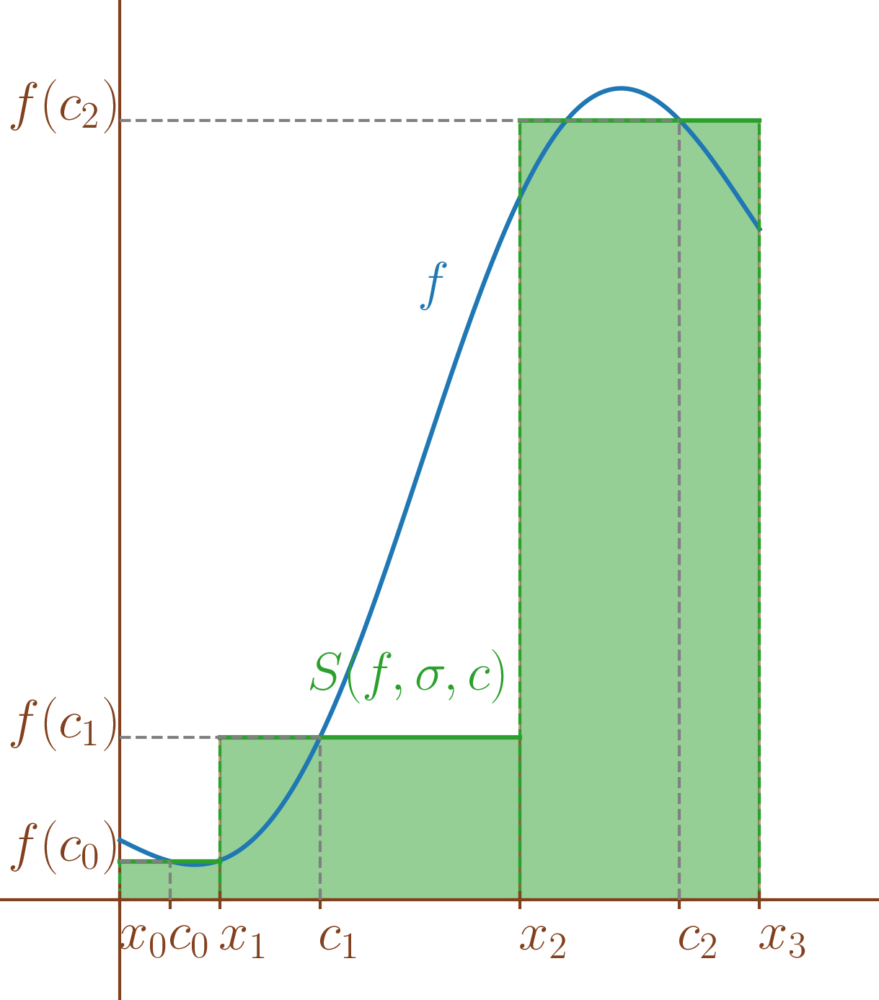
Soient \(f \in \mathscr{C}_{\mathrm{m}}\left([a,b]\right)\) et \(\sigma = (x_0,\ldots,x_n)\) une subdivision quelconque de \([a,b]\).
Pour \(k \in [\![ 0,n-1]\!]\), on considère \(c_k \in [x_k,x_{k+1}]\) et \(c = (c_0,\ldots,c_{n-1})\).
Alors,
\[S(f,\sigma,c) \xrightarrow[p(\sigma) \to 0]{} \int_a^b f\]
où, pour rappel, \(p(\sigma)\) désigne le pas de \(\sigma\) (voir la définition [def:subdivision]).
Commençons par traiter le cas \(f\) continue sur \([a,b]\).
Par théorème de Heine, \(f\) est uniformément continue sur \([a,b]\) donc il existe \(\eta_\varepsilon\) tel que \[\forall x,x' \in [a,b], |x-x'| \leq \eta_\varepsilon \Longrightarrow \left|f(x)-f(x')\right| \leq \varepsilon.\]
De plus, par relation de Chasles,
\[\begin{aligned} S(f,\sigma,c)-\int_a^b f & = \sum_{k=0}^{n-1} f(c_k) (x_{k+1}-x_k)-\sum_{k=0}^{n-1} \int_{x_k}^{x_{k+1}} f \\ & = \sum_{k=0}^{n-1}\left(f(c_k) (x_{k+1}-x_k)-\int_{x_k}^{x_{k+1}} f \right). \end{aligned}\]
Or, pour \(0 \leq k \leq n-1\), \(f(c_k)(x_{k+1}-x_k) = \int_{x_k}^{x_{k+1}} f(c_k)\) donc
\[\begin{aligned} \left|S(f,\sigma,c)-\int_a^b f\right| & = \left|\sum_{k=0}^{n-1}\int_{x_k}^{x_{k+1}}\left(f(c_k)-f(x)\right)dx\right| \\ & \leq \sum_{k=0}^{n-1}\int_{x_k}^{x_{k+1}}\left|f(c_k)-f(x)\right|dx \end{aligned}\]
Or, pour \(x \in [x_k,x_{k+1}]\), on a \(\left|c_k-x\right| \leq \left|x_{k+1}-x_k\right| = x_{k+1}-x_k \leq p(\sigma)\).
Donc en imposant \(p(\sigma) \leq \eta_\varepsilon\), pour \(x \in [x_k,x_{k+1}]\), on a \(\left|c_k-x\right| \leq \eta_\varepsilon\) donc \(\left|f(c_k)-f(x)\right| \leq \varepsilon\) par uniforme continuité de \(f\).
Finalement,
\[\begin{aligned} \left|S(f,\sigma,c)-\int_a^b f\right| & \leq \sum_{k=0}^{n-1}\int_{x_k}^{x_{k+1}} \varepsilon dx \\ & = \sum_{k=0}^{n-1}(x_{k+1}-x_k) \varepsilon \\ & = (x_{n}-x_0) \varepsilon = (b-a)\varepsilon. \end{aligned}\]
Donc pour \(p(\sigma) \leq \eta_\varepsilon\) assez petit, \(\left|S(f,\sigma,c)-\int_a^b f\right| \leq \varepsilon\), ce qui veut dire
\[S(f,\sigma,c) \xrightarrow[p(\sigma) \to 0]{} \int_a^b f.\]
Revenons au cas général : \(f \in \mathscr{C}_{\mathrm{m}}\left([a,b]\right)\).
Soit \(\tau = (a_0,\ldots,a_p)\) adaptée à \(f\).
Alors, pour tout \(0 \leq k \leq p-1\), \(f_{| ]a_k, a_{k+1}[}\) est continue et il existe \(\ell_{k,d} \in \mathbb{R}\) et \(\ell_{k+1,g} \in \mathbb{R}\) telles que \(f(x) \xrightarrow[x \to a_k^+]{} \ell_{k,d}\) et \(f(x) \xrightarrow[x \to a_{k+1}^-]{} \ell_{k+1,g}.\)
On a donc \(f_{|]a_k,a_{k+1}[}\) qui est prolongeable en une fonction continue \(\tilde{f}_k\) sur \([a_k,a_{k+1}]\) en posant \(\tilde{f}_k(a_k) = \ell_{k,d}\) et \(\tilde{f}_k(a_{k+1}) = \ell_{k+1,g}\).
On note \(\sigma_{|[a_k,a_{k+1}]}\) la subdivision \(\sigma\) ramenée à \([a_k,a_{k+1}]\), c’est-à dire la subdivision \(\sigma\) à laquelle on a ôté les points hors de \([a_k,a_{k+1}]\) et rajouter \(a_k,a_{k+1}\) aux extrémités.
On note de même \(c_{|[a_k,a_{k+1}]})\) qui correspond aux points \(c\) qui sont dans les segments de \(\sigma_{|[a_k,a_{k+1}]}\).
Alors, par le cas précédent, \(S(\tilde{f}_k,\sigma_{|[a_k,a_{k+1}]},c_{|[a_k,a_{k+1}]}) \xrightarrow[p(\sigma) \to 0]{} \int_{a_k}^{a_{k+1}} \tilde{f}_k = \int_{a_k}^{a_{k+1}} f\).
Or, \(S(f,\sigma,c) = \sum_{k=0}^{n-1} S(\tilde{f}_k,\sigma_{|[a_k,a_{k+1}]},c_{|[a_k,a_{k+1}]})\) donc
\[S(f,\sigma,c) \xrightarrow[p(\sigma) \to 0]{} \sum_{k=0}^{n-1}\int_{a_k}^{a_{k+1}} f = \int_a^b f.\]
Soit \(f \in \mathscr{C}_{\mathrm{m}}\left([a,b]\right)\).
Pour \(n \in \mathbb{N}^{\star}\), on considère \(\sigma_n = \left(a+k\frac{b-a}{n}\right)_{0 \leq k \leq n}\) la subdivision régulière de \([a,b]\) de taille \(n\).
Alors, \(p(\sigma_n) = \frac{b-a}{n} \xrightarrow[n \to +\infty]{} 0\).
Donc en considérant pour \(n \in \mathbb{N}^{\star}\), \(c_n = (c_{0,n},\ldots,c_{n-1,n})\) tel que pour tout \(0 \leq k \leq n-1\), \(c_{k,n} \in \left[a+k\frac{b-a}{n},a+(k+1)\frac{b-a}{n}\right]\) , on a
\[S(f,\sigma_n,c_n) = \frac{b-a}{n}\sum_{k=0}^n f\left(c_{k,n}\right) \xrightarrow[n \to +\infty]{} \int_a^b f.\]
Par exemple,
\[S(f,\sigma_n,c_n) = \frac{b-a}{n}\sum_{k=0}^n f\left(a+k\frac{b-a}{n}\right) \xrightarrow[n \to +\infty]{} \int_a^b f.\]
Pour \(f \in \mathscr{C}_{\mathrm{m}}\left([0,1]\right)\), cela donne \[S(f,\sigma_n,c_n) = \frac{1}{n}\sum_{k=0}^n f\left(\frac{k}{n}\right) \xrightarrow[n \to +\infty]{} \int_0^1 f.\]
Exercice — Déterminer la limite de \((u_n)_{n \geq 1}\) définie par \[\forall n \in \mathbb{N}^{\star}, u_n = \sum_{k=0}^{n-1} \frac{\sqrt[n]{e^k}}{n^2+k^2}.\]
Corrigé — Remarquons que pour \(n \in \mathbb{N}^{\star}\),
\[u_n = \sum_{k=0}^{n-1} \frac{e^{\frac{k}{n}}}{n^2+k^2} = \frac{1}{n} \sum_{k=0}^{n-1} \frac{e^{\frac{k}{n}}}{1+\left(\frac{k}{n}\right)^2}.\]
On reconnaît donc une somme de Riemann comme dans l’exemple [ex:somme_Riemann_sub_reguliere] et on a donc
\(u_n \xrightarrow[n \to +\infty]{} \int_0^1 \frac{e^x}{1+x^2}dx.\)
Dans cette partie on va maintenant considérer \(f : I \to \mathbb{R}\) continue avec \(I\) un intervalle quelconque de \(\mathbb{R}\).
Soit \(f : I \to \mathbb{R}\) continue et \(a,b \in I\).
Jusqu’ici, on a défini \(\int_a^b f\) avec \(a <b\). On étend cette définition de sorte que
si \(a = b\), on pose \(\int_a^b f = \int_a^a f = 0\),
si \(a > b\), on pose \(\int_a^b f = -\int_b^a f\).
Cette définition est choisie de sorte que la relation de Chasles reste vraie, c’est-à-dire, pour tout \(a,b,c \in I\),
\[\boxed{\int_a^b f =\int_a^c f + \int_c^b f.}\]
En effet,
si \(c=a\), \(\int_a^c f = 0\) et donc \(\int_a^b f =\int_a^c f + \int_c^b f = 0+\int_a^b f\).
si \(c < a < b\), on sait par ce qui précède que \[\int_c^b f = \int_c^a f + \int_a^b f,\] ce qui équivaut à \(\int_a^b f =-\int_c^a f+ \int_c^b f = \int_a^c f+ \int_c^b f\).
Le détail important qui change est le suivant : pour \(a,b \in I\), on a \[\boxed{\left|\int_a^b f\right| \leq \left\{ \begin{array}{ll} \int_a^b \left|f\right| & \mbox{si $a \leq b$} \\ & \\ \int_b^a \left|f\right| & \mbox{si $a > b$} \\ \end{array} \right..}\]
En effet,
Le cas \(a < b\) correspond au début du cours,
le cas \(a=b\) donne \(0 \leq 0\),
le cas \(b=a\) donne
\[\left|\int_a^b f\right| = \left|-\int_b^a f\right| = \left|\int_b^a f\right| \leq \int_b^a \left|f\right| \text{ d'après le début de cours car $b < a$.}\]
Soit \(f : I \to \mathbb{R}\) continue et \(x_0 \in I\).
On peut considérer \(\int_{x_0}^x f\) pour \(x \in I\) (car \([x_0,x] \subset I\)).
On pose \(\begin{array}{lllll} F_{x_0} & : & I & \to & \mathbb{R} \\ & & x & \mapsto & \int_{x_0}^x f(t)dt \end{array}\).
Alors, \(F_{x_0}\) est dérivable sur \(I\) et \(F_{x_0}' = f\). Autrement dit, \(F_{x_0}\) est une primitive de \(f\) sur \(I\).
Cela revient à montrer que pour tout \(x \in I\), \(d(h) = \frac{F_{x_0}(x+h)-F_{x_0}(x)}{h}-f(x)\) tend vers \(0\) quand \(h\) tend vers \(0\).
Or, pour \(h \in \mathbb{R}^{\star}\), par Chasles, \[F_{x_0}(x+h)-F_{x_0}(x) = \int_{x_0}^{x+h} f(t)dt - \int_{x_0}^x f(t)dt = \int_{x}^{x+h} f(t)dt.\]
De plus, \(h f(x) = \int_{x}^{x+h} f(x)dt \iff f(x) = \frac{1}{h}\int_{x}^{x+h} f(x)dt\).
On a donc \(d(h) = \frac{1}{h} \int_{x}^{x+h} f(t)dt-\frac{1}{h}\int_{x}^{x+h} f(x)dt = \frac{1}{h}\int_{x}^{x+h}\left( f(t)-f(x)\right)dt\).
On remarque alors que \(f\) est continue en \(x\) donc il existe \(\eta > 0\) tel que pour tout \(t \in I\) tel que \(\left|t-x\right| < \eta\), \(\left|f(t)-f(x)\right| \leq \varepsilon\).
Puis,
si \(h > 0\), \(x+h > x\) et
\[\left|d(h)\right| = \frac{1}{h}\left|\int_{x}^{x+h}\left( f(t)-f(x)\right)dt\right| \leq \frac{1}{h} \int_{x}^{x+h}\left| f(t)-f(x)\right|dt.\]
De plus, pour \(t \in [x,x+h]\), \(\left|t-x\right| \leq h\) donc en prenant \(h\) tel que \(0 < h \leq \eta\),
\[\left|d(h)\right| \leq \frac{1}{h} \int_{x}^{x+h} \varepsilon dt = \varepsilon.\]
Si \(h < 0\), \(x+h < x\) et
\[\left|d(h)\right| = \frac{1}{h}\left|\int_{x}^{x+h}\left( f(t)-f(x)\right)dt\right| \leq \frac{1}{h} \int_{x+h}^{x}\left| f(t)-f(x)\right|dt.\]
De plus, pour \(t \in [x+h,x]\), \(\left|t-x\right| \leq \left|h\right|\) donc en prenant \(h\) tel que \(-\eta \leq h < 0\),
\[\left|d(h)\right| \leq \frac{1}{h} \int_{x+h}^{x} \varepsilon dt = \varepsilon.\]
Finalement, pour \(h\) tel que \(\left|h\right| \leq \eta\), \(\left|d(h)\right| \leq \varepsilon\).
On a donc \(d(h) \xrightarrow[h \to 0]{} 0\) et \(F_{x_0}\) dérivable en \(x\) avec \(F_{x_0}'(x) = f(x)\).
Soit \(f: I \to \mathbb{R}\) continue alors \(f\) admet une primitive sur \(I\).
De plus, \(F_{x_0}\) est l’unique primitive de \(f\) qui s’annule en \(x_0\).
Soit \(x_0 \in I\), \(F_{x_0}\) définie dans la proposition [prop:primitive_fonctione_c0_integrale] est une primitive de \(f\) sur \(I\).
De plus, soit \(F\) une primitive quelconque de \(f\) sur \(I\) alors \((F-F_{x_0})' = f-f = 0\) donc il existe \(C \in \mathbb{R}\) tel que \(F = F_{x_0} + C\).
Alors, \(F(x_0) = 0\) implique \(0 = F(x_0) = F_{x_0}(x_0) + C = C\) donc \(F = F_{x_0}\).
En revanche, il est faux d’affirmer que toute primitive de \(f\) continue s’écrive \(x \mapsto \int_{x_0}^x f(t)dt\) avec un certain \(x_0 \in I\).
Par exemple, avec \(I = \mathbb{R}\) et \(f=0\), la primitive \(F = 1\) ne peut pas s’écrire \(x \mapsto \int_{x_0}^x 0 dt = 0\).
Soit \(f: I \to \mathbb{R}\) continue et \(a,b \in \mathbb{R}\).
Soit \(F\) une primitive de \(f\) sur \(I\) alors \(\int_a^b f(t)dt = F(b)-F(a)\).
Considérons \(x_0 \in I\), \(F_{x_0}\) définie dans la proposition [prop:primitive_fonctione_c0_integrale] et \(F\) une primitive quelconque de \(f\) sur \(I\).
Alors \((F-F_{x_0})' = f-f = 0\) donc il existe \(C \in \mathbb{R}\) tel que \(F = F_{x_0} + C\).
On a donc
\[\begin{aligned} F(b) - F(a) & =F_{x_0}(b) + C -\left(F_{x_0}(a) + C \right) \\ & = F_{x_0}(b)-F_{x_0}(a) \\ & = \int_{x_0}^b f(t)dt - \int_{x_0}^a f(t)dt \\ & = \int_{x_0}^b f(t)dt + \int^{x_0}_a f(t)dt \\ & = \int_a^b f(t)dt. \end{aligned}\]
(Changement de variable) Soit \(f : I \to \mathbb{R}\) continue sur \(I\) et \(\varphi : J \to \mathbb{R}\) (avec \(J\) intervalle de \(\mathbb{R}\)). On suppose \(\varphi\) dérivable sur \(J\), \(\varphi'\) continue sur \(J\) et \(\varphi(J) \subset I\). Alors, soient \(\alpha, \beta \in J\), \[\int_\alpha^\beta (f\circ \varphi)(t) \varphi'(t)dt = \int_{\varphi(\alpha)}^{\varphi(\beta)}f(x)dx.\]
(Intégration par parties) Soient \(u : I \to \mathbb{R}\) et \(v: I \to \mathbb{R}\) dérivables sur \(I\) avec \(u',v'\) continues et \(a, b \in I\) alors \[\int_a^b u'(x)v(x)dx = [u(x)v(x)]_a^b - \int_a^b u(x)v'(x)dx.\]
(Égalité de Taylor avec reste intégral) Soient \(f : I \to \mathbb{R}\) de classe \(\mathscr{C}^{n+1}\) sur \(I\) (\(n\in \mathbb{N}\)) et \(a,b \in I\).
Alors,
\[f(b) = f(a) + f'(a)(b-a)+\ldots+\frac{f^{(n)}(a)}{n!}(b-a)^n + \int_a^b \frac{(b-t)^n}{n!}f^{(n+1)}(t)dt.\]
Démontrons ce résultat par récurrence sur \(n\).
Initialisation. Pour \(n = 0\), pour \(f\) \(\mathscr{C}^1\) sur \(I\), \(f\) est une primitive de \(f'\) sur \(I\) donc on a \[\int_a^b f'(t)dt = f(b)-f(a) \iff f(b) = f(a) + \int_a^b \frac{(b-t)^0}{0!}f'(t)dt.\]
Hérédité. Supposons le résultat vrai pour \(f \in \mathscr{C}^{n+1}\) sur \(I\).
On a alors \[f(b) = f(a) + f'(a)(b-a)+\ldots+\frac{f^{(n)}(a)}{n!}(b-a)^n + \int_a^b \frac{(b-t)^n}{n!}f^{(n+1)}(t)dt.\]
En intégrant par parties \(\int_a^b \frac{(b-t)^n}{n!}f^{(n+1)}(t)dt\)
avec \(\left\{ \begin{array}{ll} u(t) & = -\frac{(b-t)^{n+1}}{n!(n+1)} = -\frac{(b-t)^{n+1}}{(n+1)!} \\ v(t) & = f^{(n+1)}(t) \end{array}\right. \Longrightarrow \left\{ \begin{array}{ll} u'(t) & = \frac{(b-t)^n}{n!} \\ v'(t) & = f^{(n+2)}(t) \end{array}\right.\),
on a
\[\begin{aligned} \int_a^b \frac{(b-t)^n}{n!}f^{(n+1)}(t)dt & = \left[-\frac{(b-t)^{n+1}}{(n+1)!}f^{(n+1)}(t)\right]_a^b +\int_a^b\frac{(b-t)^{n+1}}{(n+1)!} f^{(n+2)}(t)dt \\ & = \frac{(a-t)^{n+1}}{(n+1)!}f^{(n+1)}(t)+\int_a^b\frac{(b-t)^{n+1}}{(n+1)!} f^{(n+2)}(t)dt. \end{aligned}\]
Donc \[f(b) = f(a) + f'(a)(b-a)+\ldots+\frac{f^{(n)}(a)}{n!}(b-a)^n +\frac{(a-t)^{n+1}}{(n+1)!}f^{(n+1)}(t)+\int_a^b\frac{(b-t)^{n+1}}{(n+1)!} f^{(n+2)}(t)dt,\] ce qui est l’égalité à \(n+1\).
Soient \(f : I \to \mathbb{R}\) de classe \(\mathscr{C}^{n+1}\) sur \(I\) (\(n\in \mathbb{N}\)) et \(a,b \in I\).
Alors,
\[\begin{aligned} f(b) & = f(a) + f'(a)(b-a)+\ldots+\frac{f^{(n)}(a)}{n!}(b-a)^n \\ & + \frac{(b-a)^{n+1}}{n!}\int_0^1 (1-u)^n f^{(n+1)}\left(a+u(b-a)\right)du. \end{aligned}\]
On remarque que seul l’intégrale est changée par rapport à la formule de Taylor avec reste intégral.
On applique le changement de variable \(a+u(b-a) = t \iff u = \frac{t-a}{b-a}\).
On a alors \(dt = (b-a)du\) et
\[\begin{aligned} \int_a^b \frac{(b-t)^n}{n!}f^{(n+1)}(t)dt & = \int_0^1 \frac{(b-a-u(b-a))^n}{n!}f^{(n+1)}\left(a+u(b-a)\right) (b-a)du \\ & = (b-a) \int_0^1 \frac{(b-a)(1-u))^n}{n!}f^{(n+1)}\left(a+u(b-a)\right) du \\ & = \frac{(b-a)^{n+1}}{n!}\int_0^1 (1-u)^n f^{(n+1)}\left(a+u(b-a)\right)du. \end{aligned}\]
Le changement de variable utilisé dans la preuve du corollaire [cor:egalite_Taylor_reste_integral] est intéressant à retenir. Il permet de passer d’une intégrale sur \([a,b]\) à une intégrale sur \([0,1]\).
En fait, il suffit de remarquer que
\[t \in [a,b] \iff \exists u \in [0,1] / t = a+u(b-a).\]
En effet,
Si \(t = a+u(b-a)\) avec \(u \in [0,1]\) alors \(t \leq a+b-a = b\) et \(t \geq a\) donc \(t\in[a,b]\).
Si \(t \in [a,b]\), \(u = \frac{t-a}{b-a}\) vérifie \(0 \leq u \leq 1\) et \(a+u(b-a) = t-a+a = t\).
(Inégalité de Taylor-Lagrange) Soient \(f : I \to \mathbb{R}\) de classe \(\mathscr{C}^{n+1}\) sur \(I\) (\(n\in \mathbb{N}\)) et \(a,b \in I\).
Soit \(M_{n+1}\) majorant de \(\left|f^{(n+1)}\right|\) sur \([a,b]\).
Alors,
\[\left|f(b) - f(a) + f'(a)(b-a)+\ldots+\frac{f^{(n)}(a)}{n!}(b-a)^n\right| \leq \frac{\left|b-a\right|^{n+1}}{(n+1)!}M_{n+1}.\]
La formulation du corollaire [cor:egalite_Taylor_reste_integral] de l’égalité de Taylor avec reste intégral appliquée à \(f \in \mathscr{C}^{n+1}\) donne
\[\begin{aligned} f(b) & = f(a) + f'(a)(b-a)+\ldots+\frac{f^{(n)}(a)}{n!}(b-a)^n \\ & + \frac{(b-a)^{n+1}}{n!}\int_0^1 (1-u)^n f^{(n+1)}\left(a+u(b-a)\right)du. \end{aligned}\]
On a donc \[\begin{aligned} &\left|f(b) - f(a) + f'(a)(b-a)+\ldots+\frac{f^{(n)}(a)}{n!}(b-a)^n\right| \\ & = \left|\frac{(b-a)^{n+1}}{n!}\int_0^1 (1-u)^n f^{(n+1)}\left(a+u(b-a)\right)du\right| \\ & \leq \frac{\left|b-a\right|^{n+1}}{n!} \int_0^1 (1-u)^n \left|f^{(n+1)}\left(a+u(b-a)\right)\right|du \\ & \leq \frac{\left|b-a\right|^{n+1}}{n!} \int_0^1 (1-u)^n M_{n+1}du \text{ car pour $u \in [0,1], a+u(b-a) \in [a,b]$} \\ & = \frac{\left|b-a\right|^{n+1}M_{n+1}}{n!}\int_0^1 (1-u)^ndu \\ & = \frac{\left|b-a\right|^{n+1}M_{n+1}}{n!}\left[\frac{-1}{n+1}(1-u)^{n+1}\right]_0^1 \\ & = \frac{\left|b-a\right|^{n+1}}{(n+1)!}M_{n+1}. \end{aligned}\]
On considère \(f=\exp\) qui est \(\mathscr{C}^\infty\) sur \(\mathbb{R}\) et \(a=0, b=x \in \mathbb{R}\).
Alors, pour tout \(n \in \mathbb{N}\), \(f^{(n+1)} = \exp\) donc \(f^{(n+1)}(a) =f^{(n+1)}(0) = 1\) et par croissance de \(\exp\),
\[\begin{aligned} &\mbox{ si $x > 0$,} \\ \forall t \in [0,x], \left|e^t\right| = e^t \leq e^x \\ &\mbox{et si $x < 0$,} \\ \forall t \in [x,0], \left|e^t\right| = e^t \leq 1 \\ \end{aligned}\]
\(M_x\) est donc un majorant de \(\left|f^{(n+1)}\right|\) sur \([0,x]\).
On a donc, en appliquant l’inégalité de Taylor-Lagrange, pour tout \(n \in \mathbb{N}\),
\[\left|e^x - \sum_{k=0}^n \frac{x^k}{k!}\right| \leq \frac{x^{n+1}}{(n+1)!}M_x \xrightarrow[n \to +\infty]{} 0.\]
Donc pour tout \(x \in \mathbb{R}\),
\[\sum_{k=0}^n \frac{x^k}{k!} \xrightarrow[n \to +\infty]{} e^x.\]
En particulier,
\[\sum_{k=0}^n \frac{1}{k!} \xrightarrow[n \to +\infty]{} e.\]